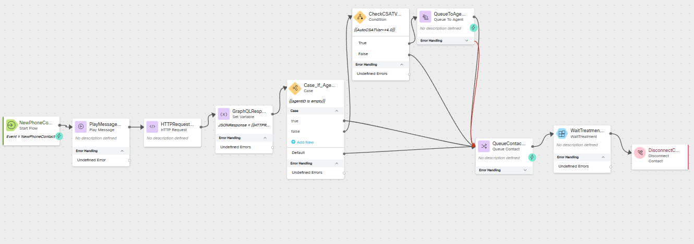

Mission 5: Last Agent Routing
Story
A common request for returning customers calling into a contact center is to work with the last person with which they had a good experience. This may be because they are already familiar with what the customer needs or it may just be that the customer is familiar with the agent and enjoyed their last interaction. With the new Auto CSAT feature in the Webex Contact Center we can automatically account for this request and route to the last agent which had a high Auto CSAT with the customer.
Note
Because this is a lab environment and you will be playing both the role of the customer and agent, we are going to use a simulated CSAT as it would be difficult to properly score a call in these conditions.
High Level Explanation
- New call comes into the flow
- Call the Search API to find the last agent with which they had a good CSAT
- If the agent is available, we will route the call to that agent
- If the agent is not available or if no recent good CSAT scores exits for the caller, we will route the call to the queue for the next available agent.
Note
We are going to touch Subflow which is the feature that enables easier management of complex flows by breaking down commonly used and repeated portions into reusable subflows. This improves readability of flows, increases reusability of repeated functionality in the subflow, as well as improves development time since there is no redundant design of the same flows. Subflows also introduce the ability to share commonly used subroutines between developers, between customers and will help unlock a library of subflows available in the marketplace.
Preconfigured elements
- Wait treatment Subflow which will provide Music in Queue and Queue Messages.
- Connector for calling Webex Contact Center APIs
- Agent Editable and Reportable Global Variable for our simulated CSAT
Build
-
Create a flow named LastAgentRouting_Your_Attendee_ID and add these flow variables:
- Callback Status variable:
Name: agentID
Type: String
Default Value: empty
- Callback Connect Time variable:
Name: queriedCSAT
Type: Decimal
Default Value: 0.0
-
Add the Global Variable simulatedCSAT to the flow
There are no values to set because it has already been configured globally

-
Add a Play Message node
Connect the New Phone Contact node edge to this Play Message node
Enable Text-To-Speech
Select the Connector: Cisco Cloud Text-to-Speech
Click the Add Text-to-Speech Message button
Delete the Selection for Audio File
Text-to-Speech Message: Welcome to Mission 5 of Advanced Routing mission.

-
Add an HTTP Request node for our query
Connect the output node edge from the Play Message node to this node
Select Use Authenticated Endpoint
Connector: WxCC_API
Path: /search
Method: POST
Content Type: Application/JSON
Copy this GraphQL query into the request body:
{"query":"query simulatedCSAT($from:Long! $to:Long! $timeComparator:QueryTimeType $filter:TaskFilters $name:String!){task(from:$from,to:$to,timeComparator:$timeComparator,filter:$filter){tasks{owner{name id}simulatedCSAT:doubleGlobalVariables(name:$name){name value}}}}","variables":{"from":"{{now() | epoch(inMillis=true) - 604800000}}","to":"{{now() | epoch(inMillis=true)}}","timeComparator":"endedTime","filter":{"and":[{"status":{"equals":"ended"}},{"origin":{"equals":"{{NewPhoneContact.ANI}}"}},{"doubleGlobalVariables":{"name":{"equals":"simulatedCSAT"},"value":{"gte":3}}}]},"name":"simulatedCSAT"}}Expanded Query For Understanding (optional)
query simulatedCSAT( $from: Long! $to: Long! $timeComparator: QueryTimeType $filter: TaskFilters $name: String! ) { task(from: $from, to: $to, timeComparator: $timeComparator, filter: $filter) { tasks { owner { name #Agent Name id #Agent ID } simulatedCSAT: doubleGlobalVariables(name: $name) { name value #Value of the simulatedCSAT } } } }Variables: { "from": "{{now() | epoch(inMillis=true) - 604800000}}", # time now - 1 week represented in EPOCH time(ms) "to": "{{now() | epoch(inMillis=true)}}", # time now represented in EPOCH time(ms) "timeComparator": "endedTime", "filter": { "and": [ { "status": { "equals": "ended" } }, { "origin": { "equals": "{{NewPhoneContact.ANI}}" } }, { "doubleGlobalVariables": { #Filtering on the Global Variable simulatedCSAT to be greater or equal to 3 "name": { "equals": "simulatedCSAT" }, "value": { "gte": 3 } } } ] }, "name": "simulatedCSAT" #The Alias name used for the global variable in the returned fields }Parse Settings:
-
Content Type: JSON
-
Output Variable:
agentID -
Path Expression:
$.data.task.tasks[0].owner.id -
Output Variable:
queriedCSAT -
Path Expression:
$.data.task.tasks[0].simulatedCSAT.value
-
-
Add a Condition node
Connect the output node edge from teh HTTP Request node to this node
We will connect the True node in a future step.
Expression:
{{agentID is empty}} -
Add a Queue To Agent node
Connect the False node edge of the Condition node created in previous step to this Queue To Agent.
Agent Variable: agentID
Agent Lookup Type: ID
Set Contact Priority: True
Select Static Priority
Static Priority Value: P1
Reporting Queue: Your_Attendee_ID_Queue
Park Contact if Agent Unavailable: False
Recovery Queue: Your_Attendee_ID_Queue
-
Add a Queue Contact node
Connect Queue To Agent Output and Error node edges created in previous step to this Queue Contact
Connect the True node edge from the Condition node created in Step 4 to this node
Select Static Queue
Queue: Your_Attendee_ID_Queue

-
Add a Subflow node and DisconnectContact node
In the Activity Library pane on the left side of the screen, click Subflows
Find the Subflow names WaitTreatment and drag it onto the flow canvas like you would any other node.
Connect the output node edge from this node to the DisconnectContact node.
Connect the Queue Contact node edge that we created in previous step to this Subflow node
Subflow Label: Latest
Enable automatic updates: True
Subflow Input Variables: None
Subflow Output Variables: None
Check your flow
 -
Publish your flow
Turn on Validation at the bottom right corner of the flow builder
If there are no Flow Errors, Click Publish
Add a publish note
Add Version Label(s): Latest
Click Publish Flow
-
Map your flow to your inbound channel
Navigate to Control Hub > Contact Center > Channels
Locate your Inbound Channel (you can use the search): Your_Attendee_ID_Channel
Select the Routing Flow: LastAgentRouting_Your_Attendee_ID
Select the Version Label: Latest
Click Save in the lower right corner of the screen

{kind=link}
{kind=link}
{kind=link}
{kind=link}
{kind=link}
Testing
- Your Agent desktop session should be still active but if not, use Webex CC Desktop application
 and login with agent credentials you have been provided wxcclabs+agent_IDYour_Attendee_ID@gmail.com. You will see another login screen with OKTA on it where you may need to enter the email address again and the password provided to you.
and login with agent credentials you have been provided wxcclabs+agent_IDYour_Attendee_ID@gmail.com. You will see another login screen with OKTA on it where you may need to enter the email address again and the password provided to you. - On your Agent Desktop, set your status to available
- Using Webex, place a call to your Inbound Channel number Your_Attendee_ID_Channel
- You should be offered a call, click on the accept button. (You may want to mute the mic on both Webex and the Agent Desktop)
- In the Agent Desktop you will see a new field in Call Information section where you can edit the Simulated CSAT. Enter a value of 2.9 and click save.
- After a few moments end the call and select a wrapup code.
- Using Webex, place another call to your Inbound Channel number Your_Attendee_ID_Channel
- You should be offered the call, click on the accept button.
- Enter a value of 3.7 in for Simulated CSAT and click save.
- After a few moments end the call and select a wrapup code.
- In your Flow:
- Open the debugger
- Select the first interaction (at the bottom of the list)
- Trace the steps taken in the flow
- Open the last interaction
- Trace the steps taken in the flow
- Answer these questions:
- Did the second call get routed to your agent via the Queue To Agent node?
- Why or why not
- Did the second call get routed to your agent via the Queue To Agent node?
- On your Agent Desktop, set your status to not be available
- Using Webex, place another call to your Inbound Channel number Your_Attendee_ID_Channel
- After you hear the queue treatment start, change your status to available on the agent desktop.
- You should be offered the call, click on the accept button.
- Enter a value of 2.8 in for Simulated CSAT and click save.
- After a few moments end the call and select a wrapup code.
- In your Flow:
- Open the debugger
- Select the last interaction
- Trace the steps taken in the flow
- Answer these questions:
- Was the call routed to the Queue to Agent node?
- What happened next?
- Why?
- What will happen if you call in again starting in the Available status?
- Make sure that you are in Available status on the agent desktop.
- Using Webex, place another call to your Inbound Channel number Your_Attendee_ID_Channel
- You should be offered the call, click on the accept button.
- After a few moments end the call and select a wrapup code.
- In your Flow:
- Open the debugger
- Select the last interaction
- Trace the steps taken in the flow
- Answer the following questions:
- Was the call offered to you from the Queue to Agent node?
- What was the value of the variable queriedCSAT (look in the HTTP node step)
- Why?
- How do you think that you could change the logic/criteria to meet other business needs?
Congratulations, you have officially completed Last Agent Routing mission!